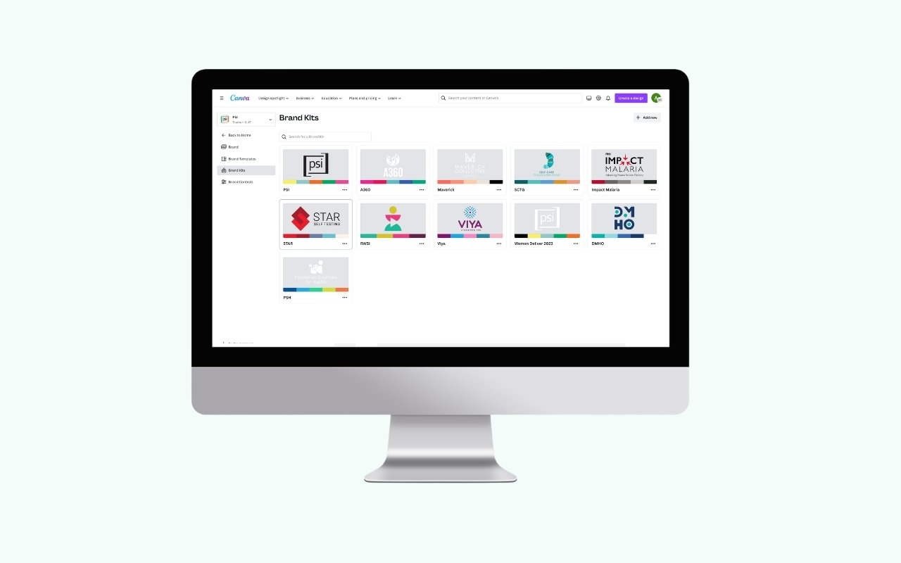
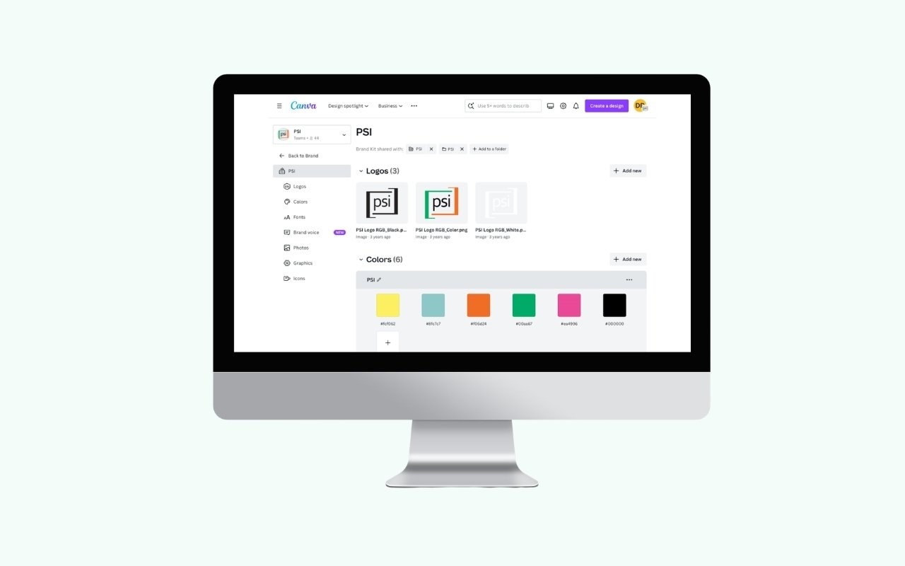
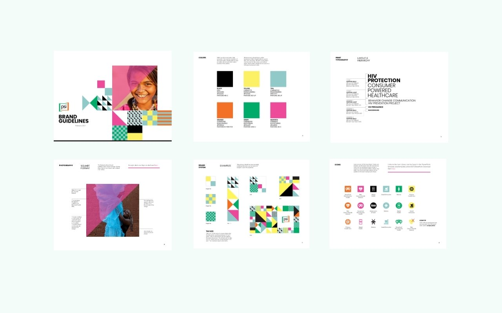
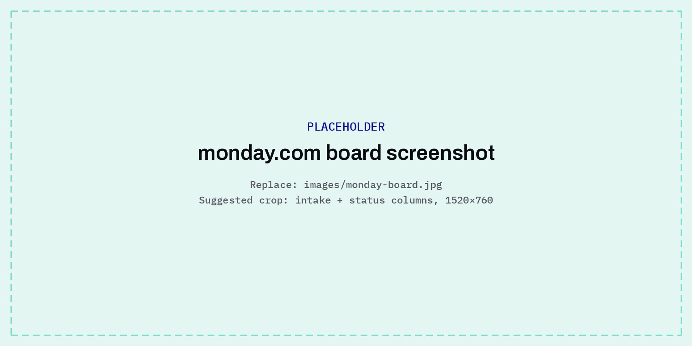

The problem
PSI is not one brand. It is a network: a parent organization, flagship program brands like A360, STAR, and Impact Malaria, social enterprise brands like Viya, and country offices from Cambodia to Zimbabwe to Nigeria, each with their own audiences, languages, and communication needs. Every one of them produces materials continuously, and almost none of that production runs through a designer.
The result was predictable. Brand guidelines existed as a PDF, which meant they existed as a document people had to remember to open, find the right page of, and reproduce by hand. Logos drifted. Palettes got approximated. Country teams built decks from whatever file they had received last. When something needed to look official, the request came to the creative team, which turned a small central function into a bottleneck for a global network. In one year the team delivered more than 200 projects for 30+ departments and programs, and a meaningful share of those were requests a template could have answered without us.
The approach
I treated the brand not as a set of rules to enforce but as a product to ship: something with an architecture, a distribution model, permissions, documentation, and users who needed onboarding. The work broke into three parts.
1. Architecture: one system, many brands
I built a brand kit for every brand in the network, each carrying its own logo set, color palette, typefaces, photography, and graphic elements. Eleven kits now live in the system, from PSI itself to A360, Maverick Collective, SCTG, Impact Malaria, STAR, RWSI, Viya, DMHO, PSH, and event brands like Women Deliver.
The decision underneath that was about what to standardize and what to leave open. Logos, color values, and typefaces are locked, because those are the elements that break a brand when they drift. Layout, imagery, and message stay flexible, because a family planning campaign in Kenya and a malaria program in Cambodia should not look identical, and a system that forces them to will simply be ignored.

2. Governance: permissions instead of policing
Access is structured by group rather than by request. Teams are organized into groups that mirror how the organization actually works, by program, by department, and by country office, and each group sees the brand kits and templates relevant to them. A designer in the Nigeria office opens the tool and finds the right assets already there. Nobody has to ask permission to be on brand, and nobody has to be told they got it wrong afterward.
That structure is what turned brand compliance from an act of enforcement into a default. The controls do the work review cycles used to do.

3. Enablement: training the network
A system nobody knows how to use is a system that doesn't exist. I ran training for teams across the network, walking through how to find the right kit, use a template, and adapt it without breaking it. Around 78 people across headquarters, regional teams, and country offices are now in the system, most of them not designers.
Alongside the tooling, I led adoption of the written brand standards and tone and voice guidelines, rebuilding the template and presentation systems so the guidance and the tools said the same thing. The documentation and the software had to agree, or people would follow whichever one was easier.

How the work flows now
Creative requests run through monday.com, with intake, prioritization, review cycles, and delivery timelines visible in one place. That gave us two things at once. Teams stopped chasing status over email, and the request data itself became a planning tool: which departments ask for what, which formats dominate, and when volume spikes across the year. Knowing that short documents, presentations, and infographics made up the bulk of demand is what told us which templates to build first.

Results
- 11 brand kits governing the full network portfolio, from the parent brand to program and country brands
- Around 78 people across 30+ teams and country offices producing on brand independently
- 200+ creative projects delivered in a year without brand review becoming the bottleneck
- Brand consistency held across 40+ country markets, in multiple languages and cultural contexts
What I'd tell another creative leader
Build the training before you build more templates. My instinct was that a good enough system would explain itself, and it didn't. Adoption moved when I sat with teams and watched where they got stuck, which is also where I learned that the templates people actually needed were not the ones I had assumed.
And decide early what you are willing to let go. The temptation with a brand system is to standardize everything, because inconsistency is uncomfortable to look at. But a system that leaves no room for a country team to make something feel local gets abandoned quietly, and then you have neither consistency nor trust. Locking the few elements that carry brand recognition and opening the rest is what made this one hold.